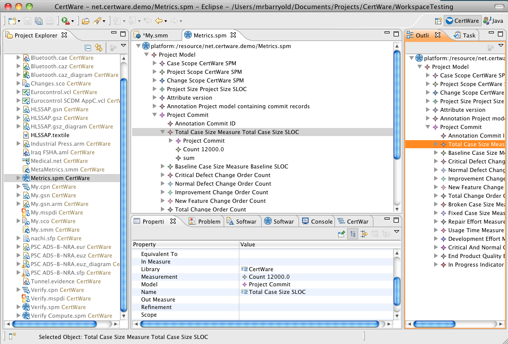
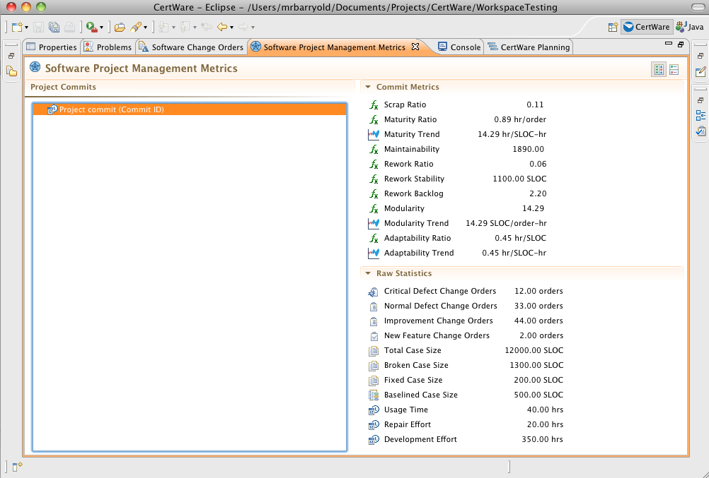
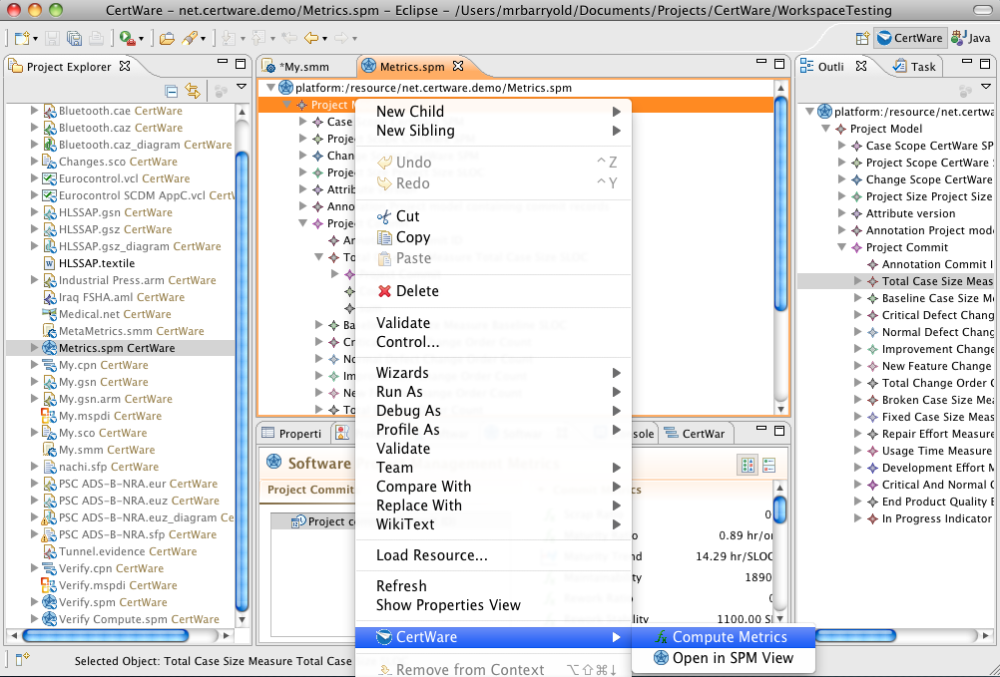

References
- Documents
- CertWare Safety Case Metrics.
- Object Management Group Software Measurement Metamodel (SMM) 1.0 Beta 1
Software Project Management Metrics
The OMG software measurement metamodel (SMM) provides the basis for CertWare safety case metrics. CertWare's software project management (SPM) metrics are built upon the SMM. The metrics suite presumes that inspecting and managing safety case artifacts is similar to inspecting and managing software source code.
The CertWare suite is similar to the software metrics suite proposed by Walker Royce in "Software Project Management: A Unified Framework". The metrics includes metrics for both quality indicators and management indicators, and include static and dynamic views. The indicators include
- Work and progress.
- Budgeted cost and expenditures.
- Staffing and team dynamics.
- Change traffic and stability.
- Breakage and modulairty.
- Rework and adaptability.
- Mean time between failures and maturity.
The Walker management metrics are the work and progress, budgeted cost and expenditures, and staffing and team dynamics indicators, while the others are quality indicators. An explanation of the statistics and metrics computations is found in the metrics document linked to the left. CertWare's metrics suite provides support for all of these except the staffing and team dynamics indicators. The SPM model includes all of the remaining indicators except the budgeted cost and expenditures, but the CertWare CPN model supports these data. One can add these or any other metrics of interest using an instance of the SMM model.
CertWare provides only a text-based structured tree editor for SPM models.
The SMM model editor is shown in the figure.
The SPM model has a companion workbench view for inspecting selections.
The metrics computation from statistics command is on the editor's context menu.
